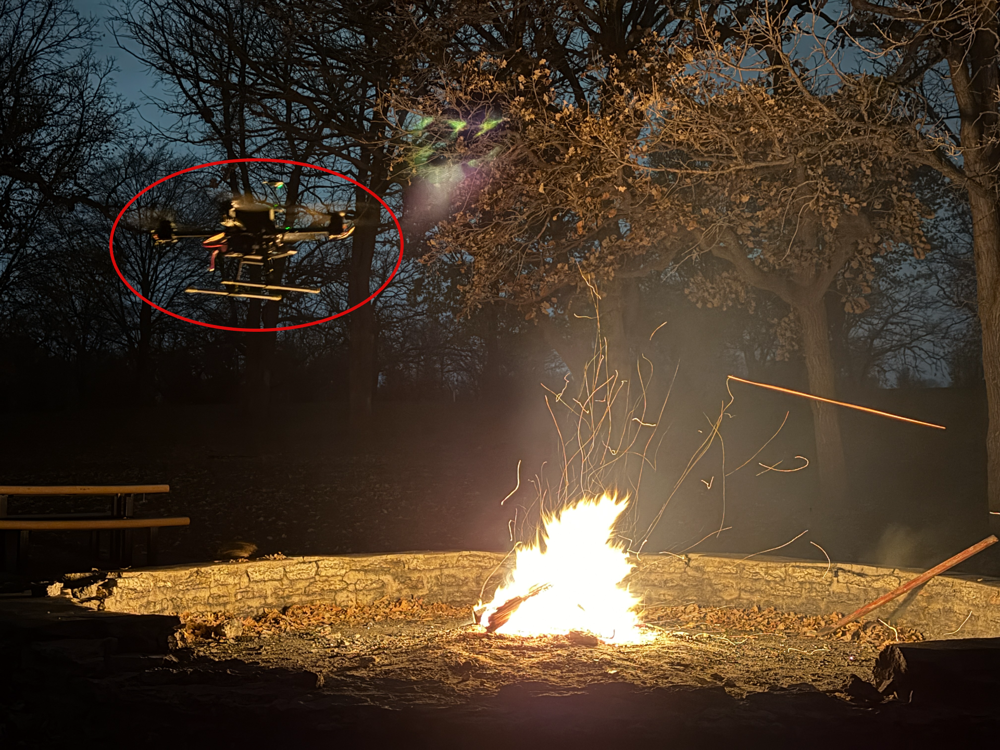

I am a Master's student in Robotics at the University of Minnesota and a
Research Assistant in the Flow Field Imaging Laboratory
under the supervision of
Professor Jiarong Hong. My research
focuses on robotics perception,
computer vision, and
autonomous systems, with an emphasis
on drone-based sensing and
wildfire ember transport.
My current work involves developing
autonomous drone platforms equipped
with stereo vision systems to detect,
track, and reconstruct
airborne ember trajectories in 3D.
Through this research, I combine
robotics,
computer vision, and
AI to better understand
wildfire behavior and advance
autonomous environmental monitoring.
I am passionate about building
intelligent robotic systems that
operate in the real world, with interests spanning
perception,
autonomous navigation,
drone robotics, and
embodied AI.
Featured Research

Autonomous Drone-Based Wildfire Ember Tracking and 3D Reconstruction
Developing autonomous drone-based stereo vision systems to detect,
track, and reconstruct airborne wildfire ember trajectories in 3D.
This work combines robotics, computer vision, and embedded AI to
study wildfire ember transport and support autonomous environmental
monitoring.
Autonomous navigation demo in Isaac SimRobot trajectory and navigation path visualization
Autonomous Navigation and SLAM using ROS2
ROS2, RTAB-Map, Nav2, AMCL, LiDAR, Isaac Sim
Project Description
Developed a complete ROS2-based autonomous navigation system
capable of mapping unknown environments, localizing within
generated maps, and autonomously navigating to user-defined
goals. The system integrates RTAB-Map for SLAM, AMCL for
localization, and Nav2 for path planning and control. The
project was validated in NVIDIA Isaac Sim using LiDAR-based
perception and autonomous navigation workflows.
Key Contributions
Built an end-to-end SLAM and navigation pipeline using ROS2
Generated occupancy-grid maps using RTAB-Map
Integrated AMCL for localization
Configured Nav2 for autonomous navigation
Developed sensor integration and robot control workflows
Validated navigation performance in Isaac Sim
Technologies
ROS2RTAB-MapNav2AMCLLiDARIsaac SimRViz2PythonC++Ubuntu Linux
Results
Generated occupancy-grid maps
Achieved autonomous point-to-point navigation
Integrated mapping, localization, planning, and control
Developed a 3D reconstruction pipeline using images captured
by an autonomous drone circling a target object. The system
combines drone-based image acquisition, image filtering,
COLMAP camera pose estimation, and Instant-NGP neural
rendering to generate high-quality 3D scene reconstructions
from real-world imagery.
Key Contributions
Designed autonomous drone image capture around a target object
Processed drone-captured images for reconstruction quality
Used COLMAP for camera poses and sparse scene geometry
Integrated COLMAP outputs with Instant-NGP reconstruction
Improved quality through filtering, cropping, and tuning
Tuned Instant-NGP hash grid settings including n_levels and log2_hashmap_size
VTOL autonomous flight simulation with waypoint navigation
VTOL UAV Simulation using Gazebo, ROS2, and ArduPilot
ROS2, ArduPilot, Gazebo, MAVROS, UAV Simulation
Project Description
Developed a complete VTOL UAV simulation environment using
Gazebo, ROS2, and ArduPilot SITL. The system supports
autonomous mission execution, vehicle control, waypoint
navigation, and flight behavior validation before hardware
deployment.
Key Contributions
Configured ArduPilot SITL for VTOL simulation
Integrated Gazebo and ROS2 for autonomous flight testing
Developed waypoint navigation and mission workflows
Validated vehicle state estimation and flight behavior
Built ROS2 pipelines for UAV monitoring and control
Tested takeoff, transition, navigation, and landing
Technologies
ROS2ArduPilotGazeboMAVROSPythonC++LinuxGitUAV SimulationAutonomous Systems
Results
Simulated VTOL autonomous flight missions
Executed waypoint navigation in a realistic environment
Validated flight controller behavior before deployment
Developed a computer vision pipeline for real-time football
player tracking and match analytics from broadcast video
footage. The system detects and tracks players, compensates
for camera motion, estimates speed and distance traveled,
and generates team-level analytics for possession and
positioning.
Key Contributions
Built a multi-object tracking pipeline for football players
Flow Field Imaging Laboratory, University of Minnesota
Working on autonomous drone platforms, stereo vision perception,
ember tracking, triangulation, and real-time deployment of computer
vision pipelines on NVIDIA Jetson systems.
Assistant Manager
June 2022 - June 2024
Jindal Steel & Power
Led engineering and industrial automation initiatives in a large-scale
manufacturing environment, with hands-on work across systems,
operations, and technical execution.
Skills
Robotics and Autonomy
End-to-end robotic system development for navigation, simulation,
perception, and autonomous mission execution.
ROS2Nav2MAVROSArduPilotGazeboIsaac SimUAV Systems
Perception, SLAM, and 3D Vision
Computer vision pipelines for mapping, localization, stereo
perception, tracking, and 3D reconstruction from robotic sensors.